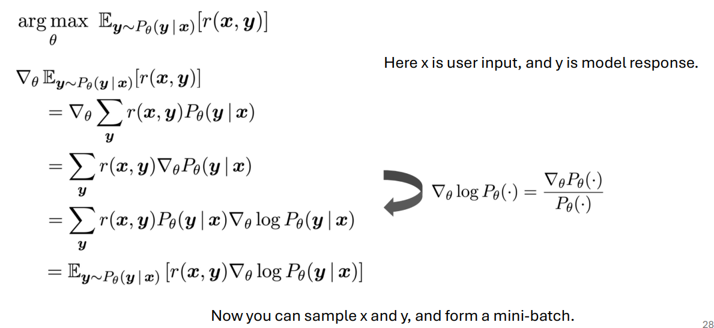
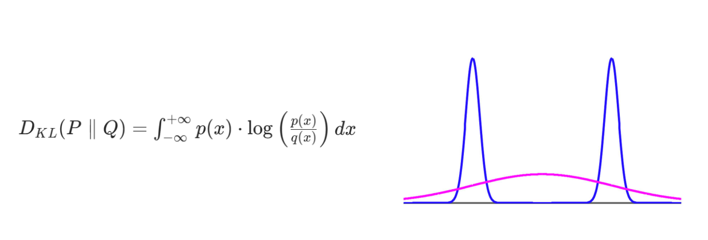
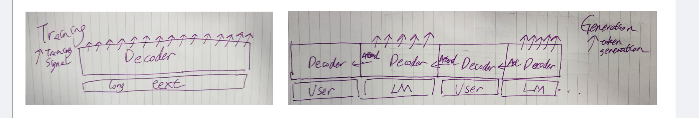
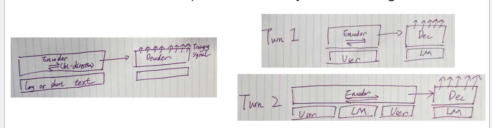
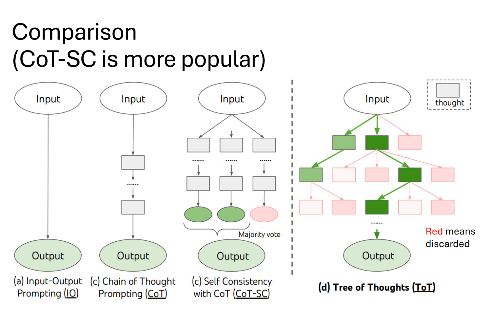
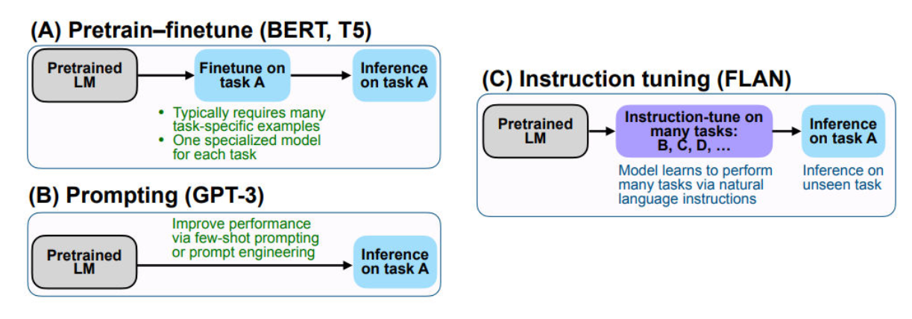

Apply attention mask to forbid the attention from future timesteps to train AR-LM.
A transformer model for AR-LM is also
referred to as a transformer decoder.
def attention(query, key, value, mask=None, dropout=None):
"Compute 'Scaled Dot Product Attention'"
d_k = query.size(-1)
scores = torch.matmul(query, key.transpose(-2, -1)) / math.sqrt(d_k)
if mask is not None:
scores = scores.masked_fill(mask == 0, -1e9) #在mask为0的地方加一个很小的负数，保证exp之后趋于0，形状为(L_Q,L_k)
p_attn = scores.softmax(dim=-1)
# 对key维度做softmax
output = torch.matmul(p_attn, value)
return output, p_attn
apply the learned model zero-shot to some
downstream language generation task (translation,
summarization, QA, etc.).
zero-shot：完全不微调
设计一些很好的prompt来实现，比如；
“Translate the following text to French. Text: [ENG TEXT] French:”
“Given the document, answer the question. Document: [DOC] Question:
[Q] Answer:”
open-ended generation: tasks that has big
freedom and diversity, like story or news generation.The model needs to rely its own (memory, consistency or
creativity)
We will represent $P(\cdot | W{1..i})$ by $p = (p_1, p_2, \dots, p{|V|})$ (where the elements are sorted so that $p1 \geq p_2 \geq p_3 \dots \geq p{|V|}$).
Top-K sampling transforms $p$ to $\hat{p}$ by:
$Z$ 是归一化常数 (normalization constant)。
$$Z = \sum_{i=1}^{|V|} p_i \cdot \mathbb{1}\{i \leq K\} = \sum_{i=1}^{K} p_i$$
保留概率最大的k个，并重新归一化总概率为1。如果k=1，那就变成了greedy decoding了。
quality-diversity trade-off
MLE 目标函数 (The MLE objective):
$$\log P(W) = \sum \log P(W_i | W_{1:i-1})$$
The exposure bias hypothesis: Due to the exposure to ground-truth prefix, the model is biased to only perform well during training, but not generation. （训练的时候前文是完美的所以表现好）
Importantly, the error is assumed to accumulate during generation, and the generation will be incrementally distorted（扭曲）. 自回归中错误累加
GAN 的目标是让生成器 $G$ 和判别器 $D$ 互相竞争：
Gumbel-Max：离散采样的过程：argmax非连续不可微
$$z = \text{one\_hot}(\arg \max_i [\log \pi_i + g_i])$$
Gumbel-Softmax用 Softmax 函数替换了 $\arg \max$ 操作
温度的作用：
对于温度也有diversity-quality trade-off
However, it is shown that language GANs are actually worse than the MLE baseline.
def gumbel_softmax(logits, tau=1.0, hard=False, dim=-1):
"""
实现了 Gumbel-Softmax 重参数化技巧。
参数说明:
logits (Tensor): 未标准化的对数概率（来自生成器 G 的输出）。
tau (float): 温度参数 (τ)，控制 Softmax 近似的平滑程度。
hard (bool): 如果为 True，则应用 Straight-Through（直通）技巧：
在前向传播中使用 One-Hot 向量，而在反向传播中使用连续梯度。
dim (int): 应用 Softmax 的维度（通常是词汇表维度）。
"""
# --- 1. Gumbel 噪声注入 ---
# 1a. 生成 Gumbel 噪声 g_i ~ Gumbel(0, 1)。
# 这是通过逆变换采样方法实现的：g_i = -log(-log(U))，其中 U ~ Uniform(0, 1)。
gumbels = -torch.empty_like(logits).exponential_().log()
# 1b. 将 Gumbel 噪声添加到 logits 并除以温度 (tau)。
# 这对应于 Gumbel-Softmax 公式中的分子部分：(log(pi_i) + g_i) / tau
gumbels = (logits + gumbels) / tau
# --- 2. 连续 Softmax 输出 (y_soft) ---
# 计算连续的、可微分的 Softmax 输出。
# 这个 y_soft 值用于在反向传播中计算梯度。
y_soft = gumbels.softmax(dim)
# --- 3. Straight-Through（直通）技巧实现 ---
if hard:
# A. 前向传播（使用硬性 One-Hot 向量）
# 找到 y_soft 中最大概率值对应的索引。
# [1] 从 .max() 返回的元组中提取索引（max_indices）。
# 这模拟了 Gumbel-Max 技巧中的 arg max 操作。
index = y_soft.max(dim, keepdim=True)[1]
# 基于最大索引，创建一个硬性（离散）的 One-Hot 向量 y_hard。
# 在前向计算中（例如作为判别器 D 的输入），使用的是 y_hard。
y_hard = torch.zeros_like(logits).scatter_(dim, index, 1.0)
# B. 反向传播（使用柔性连续梯度）
# Straight-Through 表达式：ret = y_hard - y_soft.detach() + y_soft
# 梯度分析（链式法则）：
# 1. d(y_hard)/d(logits) ≈ 0 （由于离散/arg max 操作，梯度被忽略）。
# 2. d(y_soft.detach())/d(logits) = 0 （梯度被 .detach() 显式切断）。
# 3. d(y_soft)/d(logits) 是唯一有效的、平滑的梯度。
# 最终梯度：d(ret)/d(logits) ≈ d(y_soft)/d(logits)
ret = y_hard - y_soft.detach() + y_soft
else:
# 标准重参数化技巧（不使用 ST 技巧）。
# 连续的 y_soft 向量用于前向和反向传播。
ret = y_soft
return ret

避免了采样导致的不可微分
公式右侧的梯度 $\nabla{\theta}$ 只作用于对数概率 $\log P{\theta}(\mathbf{y}|\mathbf{x})$。
最大似然估计 - MLE：
根据链式法则，$PM(W) = P_M(W_1) \cdot P_M(W_2|W_1) \cdots P_M(W_L|W{1:L-1})$，因此负对数似然可以简化为对整个序列 $W$ 的负对数似然的期望。
前一项就是真实分布的entropy的负数，所以我们可以看出MLE是希望model的分布非常接近真实的分布

第一组，给真实的句子
第二组，自回归
第三组，随机token前缀
Did the error accumulate ?
模型在前缀中接收到了严重的错误或干扰（打乱的或随机的 Token），但它并没有导致整个后续序列的生成质量灾难性地下降。
Mysteriously, the model self-recovers from the errors in the prefix.
For the shuffled data prefix, the model still generates something related
to the air force.
EB-M, quantifies the
quality ratio between generations from data prefix and a given (imperfect)
prefix.
The combination of MLE training and sampling algorithm is very
strong and is the default choice.
topk
topp
Temperature Sampling
Entropy Reduction
Order Preservation
Slope Preservation
$p_i \ge p_j \implies \hat{p}_i \ge \hat{p}_j$
$\mathcal{H}(\hat{p}) \le \mathcal{H}(p)$
这种基于点积的匹配机制，尤其是在解码 (Decoding) 阶段与贪婪搜索 (Greedy Search) 或波束搜索 (Beam Search) 结合时，特别容易导致重复：
最大化似然（后一项），最小化预测出重复token的概率（前一项）
模型给出的generic的回复，而不是有针对性的信息量大的回复
Combined with MLE training, when the model is not sure about what to say, it
degrades to some simple and “safe” pattern in data.
在有前文的条件下后文出现的概率-后文单独出现的概率，惩罚和前文关系不大的通用回答。
用负样本告诉大模型不应该去说什么
Each decoder layer is a selfattention followed by a crossattention.
The query vector for a transformer
decoder’s cross-attention head
is from the output of the previous
decoder layer. However, the key
and value vectors are from the
encoders’ outputs.
Pretraining (left) and chatbot generation (right) are highly consistent.
• Naturally handles variable-length text generation during pretraining!
• During application, we just do natural concatenation (always causal
attention). No computation is wasted (assuming we save hidden
states of the history).

In pretraining, we need to build text of variable length, and the
training signal is only from the decoder side.
• During application, we need to re-encode (especially when the
encoder is bi-directional) the whole history for each dialogue turn.

We want the dot product between query (position $m$) and key (position $n$) to directly be a function of ($m-n$).
上下文学习（ICL）是指 大型语言模型通过分析其输入提示（Prompt）中嵌入的少数示例或演示（Demonstrations），来快速理解并执行特定下游任务的能力，而无需进行传统的模型参数更新（即无需微调或梯度下降）。
Before GPT3, few-shot learning still refers to how a model can quickly
adapt to a new task demonstrated with only a few examples via
gradient update.
We have a meta-learning phase on a wide set of tasks. In effect, the
meta-learning problem treats entire tasks as training examples.（把一个任务看作一个样本，想要学习到一个比较好的初始配置）
idea：reasoning is more consuming than computation，give llm more time to think
cot 的效果在模型大的时候更加明显
few-shot: 给几个例子——add manually written reasoning before giving answer in prompt.
zero-shot: chaining of 2 prompts. 第一步明确说要一步一步推理，获得推理的过程。第二步接着这个告诉它输出的格式，获得正确的输出。
For CoT, we could sample multiple reasoning path from the LLM
with temperature sampling. 温度越高越随机，越有diversity
And then take a majority voting over the answers!
Maintain and expand a thought-tree.
• For each existing step, we prompt the LLM to propose multiple next steps,
and also to judge which path (by giving a value) is more promising (pls refer
to paper for how the prompts are designed).
• The nodes that are judged to be unlikely will be discarded

Majority and recency bias
多数偏差是指在少样本学习的提示中，如果提供的训练示例的类别分布是不平衡的，模型就会倾向于预测出现次数最多的那个类别。即使一个新的测试样本客观上属于少数类别，模型也更倾向于输出多数类别，从而牺牲了少数类别的召回率和整体准确性。
近因偏差是指在少样本学习的提示中，模型会倾向于预测在提示末尾（或最近）出现的类别。即使提示中的类别分布是平衡的，仅仅改变示例的顺序，也会显著改变模型的预测结果，导致预测的高方差（不稳定）。
Calibration （修正）of few-shot prediction
利用模型对“空输入”的预测 $\text{prediction}_{\text{null}}$ 来抵消其固有的偏差。
“归纳注意力头”不是 Transformer 架构中预设的组件，而是模型在训练过程中自发学习到的、由一个或多个注意力头（通常是两个头在不同层中协作）组成的功能性电路（Circuit）。
假设输入序列是：…[A][B]…[A]
当模型处理第二个 [A] 时，归纳头会执行以下操作：
匹配（Match）： 它会回顾序列，找到上一次出现 [A] 的位置。
复制/预测（Copy/Predict）： 它会查看上一次 [A] 后面紧跟着的标记 [B]，并利用这个信息来预测当前第二个 [A] 后面也应该跟着 [B]。
简单来说，它能发现并应用序列中重复出现的 [A] → [B] 模式。
motivation: we are lazy, 希望zero-shot prompting（不给例子）
Simple idea: After pretraining, we finetune the language model on a good amount of
“instruction following” data.
Each training samples contains the task description, an input, and the target output.
During evaluation, we hope the model can generalize to unseen task type.
FLAN data construction: Collected data from 62
existing NLP tasks. For each task, manually
compose ten unique templates
(for diversity) that use natural
language instructions to
describe the task.

We collect samples
from the model, and ask
labelers to rank them.
These ranks are used to
train the reward model
This reward
model is
used for RL.
• It’s also easier for the human labeler to rank the responses, than coming up
with a better response.
• From pretraining, the LLM might be strong enough to give a good sample
when you sample enough times.
(comparing to, say, more supervised finetuning on high-quality data)?
• It’s usually easier to train a good discriminator than a good generator
(especially now that we can use base the reward model on an existing LLM).
• By giving low reward, we are teaching the model “what not to say” by
sampling from it.
Trivial method: Prompting（Directly prompt the LM to align）
Pros: Training-free;
Cons: No guarantee that the model will precisely follow, and requires
careful prompt design
Best-of-N
1) Samples multiple solutions;
2) Chooses the one with the highest score given by a reward model.
Pros: Do not need to train the policy model, simple and powerful;
Cons: not efficient and you might need a large N
奖励模型 $\phi$ , 前一项是为了提高奖励
后一项防止优化后的模型 $\pi{\theta}$ 偏离太远（deviating too far）于初始参考模型 $\pi{\text{ref}}$
（Reward over-optimization issue）
The reward model is an
imperfect proxy, optimizing its
value too much can hinder
ground truth performance (first
increase, then decrease).
$\pi{\theta}(\cdot | x)$ 和 $\pi{\text{ref}}(\cdot | x)$含义： 它们代表在给定输入 $x$ 的条件下，所有可能的输出 $y$ 上的完整概率分布。
$\pi{\theta}(y|x)$ 和 $\pi{\text{ref}}(y|x)$含义： 它们代表在给定输入 $x$ 的条件下，模型生成特定回复 $y$ 的概率。
synthetic（人造的） setting for the Gold model：实际上并没有真的用人类标记，而是使用大模型标记
| 算法 | 对应行为 | 结果 |
|---|---|---|
| 策略梯度 (PG) | 司机非常激进，一脚油门到底或一脚刹车踩死。 | 方差太大 (Variances are too high)，容易导致训练不稳定甚至崩溃。 |
| TRPO | 司机知道要温和驾驶，但每次启动前都要用复杂的数学公式精确计算方向盘转角和油门深度。 | 安全稳定，但实现极其复杂，计算成本高。 |
| PPO-Clip | 司机学了一个简单的“安全规则”：如果当前操作被认为很好，就鼓励他继续，但不能超过一个固定的限度。如果操作不好，就限制他别做得太差。 | 安全且高效。 它用一个简单的“截断”机制，达到了与 TRPO 相似的稳定效果，但避免了复杂的计算。 |
PPO 的直觉就体现在它的 CLIP 目标函数中：
PPO的问题： too much hyper parameters
Advantage: We no longer need a reward model or a value model.
$y_w$：模型对 $x$ 生成的被选择/偏好 (winner) 的回复。$y_l$：模型对 $x$ 生成的被拒绝/不偏好 (loser) 的回复。
$\beta [\log \pi{\theta}(y_l|x) - \log \pi{\theta}(yw|x)] - \beta [\log \pi{\text{ref}}(yl|x) - \log \pi{\text{ref}}(y_w|x)]$
这个表达式实际上是：
DPO 通过绕过 奖励模型 (Reward Model) 和 强化学习 (RL) 步骤，使得训练过程更简单、更稳定。
RLHF-PPO 由于引入了复杂的强化学习和奖励模型，被认为有更大的潜力（可能在复杂的对齐任务上表现更好）。
Idea of conditional computation:
We still build a super big model, but
we only selectively activate a relevant
portion for each training sample.
MoE is natural for model parallel
负载均衡损失 $\mathcal{L}_{\text{importance}}$ 是根据所有专家的重要性值集合计算得出的：
$w_{\text{importance}}$ 是一个手动调整的缩放因子（scaling factor），用于控制此损失在总损失中的权重和影响力。
最小化 $\mathcal{L}_{\text{importance}}$ 意味着最小化 $\text{CV}(\text{Importance}(X))$。由于 $CV$ 越小表示数据越集中，因此这鼓励所有专家具有近似相等的“重要性”，从而实现了专家间的均衡负载。
在这里，$p$ 指的是 路由器概率（Router Probability），也称为 门控概率（Gate Probability）。
$f_i$ 表示在当前批次 $B$ 中实际被分派（hard-routed）给专家 $i$ 的 tokens 的比例（Actual Usage）：
惩罚少数专家被过度使用
| 特性 | $f_i$（实际使用率 - Actual Usage） | $P_i$（概率分配率 - Allocated Probability） |
|---|---|---|
| 公式 | ||
| 含义 | 硬性选择结果。实际被分派给专家 $i$ 的 tokens 占总 tokens 数 $T$ 的比例。 | 软性概率均值。门控网络分配给专家 $i$ 的概率 $p_i(x)$ 在整个批次 $B$ 中的平均值。 |
| 计算基准 | 基于 $\operatorname{argmax}$ 运算：只关心哪个专家获得了最高的概率，结果是 0 或 1（指示函数 $\mathbb{I}$）。 | 基于 软概率 $p_i(x)$ 的求和：考虑了门控网络对所有专家的概率分配大小。 |
| 代表性 | 衡量专家 $i$ 实际处理的工作量。 | 衡量专家 $i$ 预期被使用的平均概率权重。 |
while maintaining
the number of parameters
constant, we segment the experts
into a finer grain by splitting the
FFN intermediate hidden
dimension.
we
isolate certain experts to serve as
shared experts that are always
activated, aiming at capturing and
consolidating common knowledge
across varying contexts. （一部分是专家for通用知识，一直被激活）